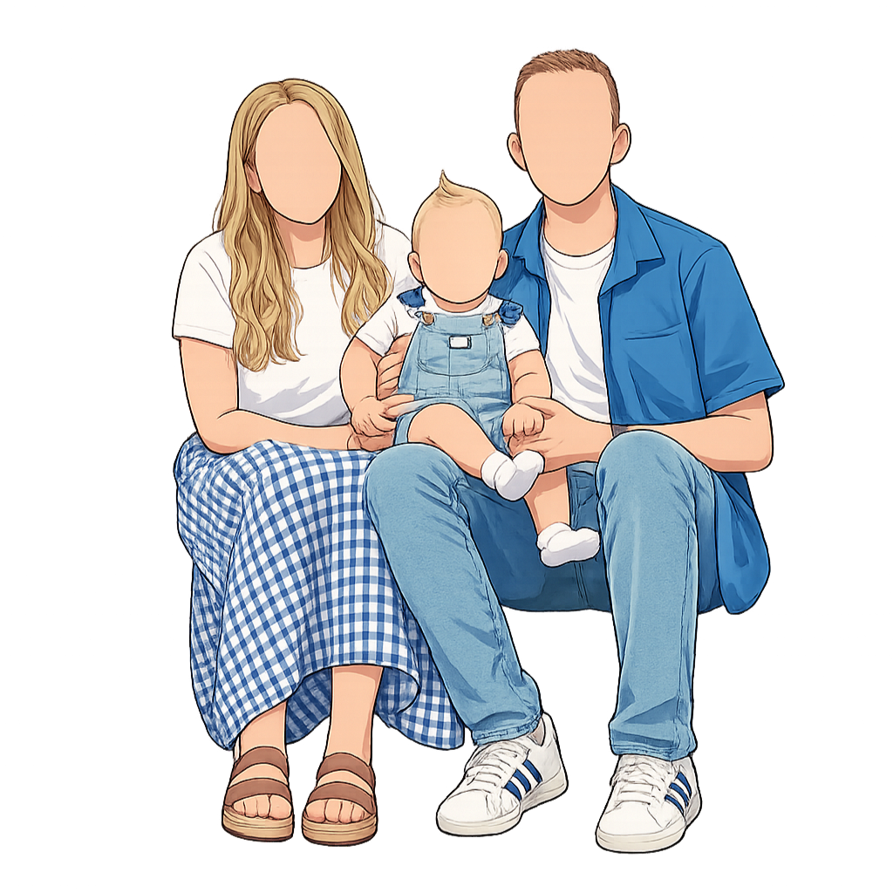

Because your brand doesn't fit in a pre-made template.

I skip the restrictive templates and help you make your vision come to life.
Backed by a Master's degree in the field and years of professional experience, I bring clean code, creative designs, and uniqueness to every project. Because I'm independently ran (not an agency), I care about the small details of every site.
Generic DIY builders lock you into rigid structures and inject heavy code that slows your site down. They look generic and unprofessional. I write custom, streamlined code tailored completely around your needs.
Unlike automated builders that limit underlying technical SEO, I hand-place relevant meta tags within the code, helping you appear higher on Google and AI searches over time.
A transparent approach built to transform ideas into live platforms.
Once you submit your request for a site, we'll discsuss your objectives and vision. We'll communicate to layout an optimized site blueprint built for your goals and style.
Based on the plans we made together, I engineer your custom website using HTML, CSS, Javascript, online plug-ins, or any other necessary requirements for the project.
I send over an unpublished version of your new site and allow you to request changes. Once approved, I'll help you connect the site to your purchased web domain. Depending on the package you purchased, we keep in touch to maintain a continually up-to-date site.